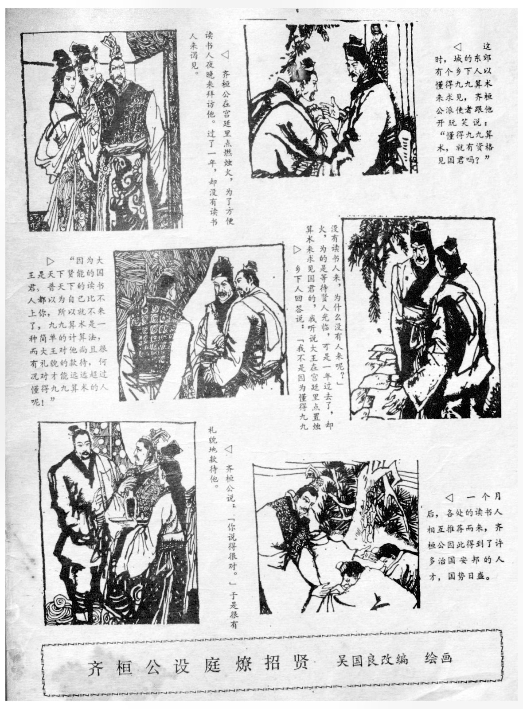

吴国良改编、绘画 《人事》1986年第12期（总第15期），封三
齐桓公设庭燎招贤
Duke Huan of Qi Lights Torches to Recruit the Worthy
- Panel text
- 齐桓公在宫廷里点燃烛火，为了方便读书人夜晚来拜访他。过了一年，却没有读书人来谒见。
Duke Huan of Qi lit torches in his palace courtyard so that scholars could conveniently visit him at night. A year passed, yet no scholar came to see him. - 这时，城的东郊有个乡下人以懂得九九算术来求见，齐桓公派使者跟他开玩笑说：“懂得九九算术，就有资格见国君吗？”
Then a countryman from the eastern outskirts asked for an audience on the strength of knowing the multiplication table. Duke Huan sent an envoy to tease him: “Knowing the multiplication table qualifies you to see the ruler?” - 乡下人回答说：「我不是因为懂得九九算术来求见国君的，我听说大王在宫廷里点置烛火，为的是等待贤人光临，可是一年过去了，却没有读书人来，为什么没有人来呢？」
The countryman replied: “I have not come to see the ruler because I know the multiplication table. I hear Your Majesty has lit torches in the palace courtyard to await worthy men, yet a year has passed and no scholar has come. Why has no one come?” - “因为大王是天下贤能的国君，普天下的读书人都以为自己比不上你，所以就不来了，九九算术是一种简单的计算法，而大王对他尚且很有礼貌的款待，何况对才能远远超过懂得九九算术的人呢！”
“Because Your Majesty is the most worthy and able ruler under heaven, every scholar in the land thinks himself no match for you, and so they stay away. The multiplication table is a simple kind of reckoning; if Your Majesty receives even someone who knows that with great courtesy, how much more so those whose talents far exceed it!” - 齐桓公说：「你说得很对。」于是很有礼貌地款待他。
Duke Huan said: “You are quite right,” and received him with great courtesy. - 一个月后，各处的读书人相互推荐而来，齐桓公因此得到了许多治国安邦的人才，国势日盛。
A month later scholars from everywhere came, recommending one another, and so Duke Huan gained many men of talent to govern and secure the state, and his realm grew stronger by the day.
- 齐桓公在宫廷里点燃烛火，为了方便读书人夜晚来拜访他。过了一年，却没有读书人来谒见。
- Description
- Six-panel picture story: for a year no scholar answers Duke Huan's torch-lit invitation; when a villager who knows only the multiplication table is received with courtesy, talented men arrive from everywhere.
- Artist
- Wu Guoliang 吴国良 (adapted and drawn)
- Published in
- 《人事》1986年第12期（总第15期）, inside back cover
- Themes
- Talent and its neglect · Exemplary history · Picture stories (连环画)

Cite
Wu Guoliang, “齐桓公设庭燎招贤” [Duke Huan of Qi Lights Torches to Recruit the Worthy], Renshi (Personnel) 《人事》, 1986, no. 12, inside back cover.